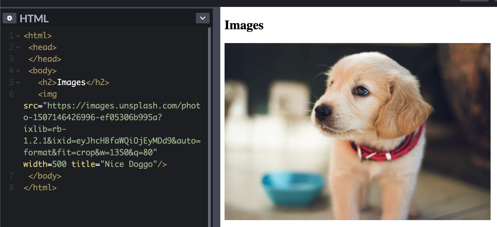

HTML Basics
- HTML Basics
Introduction to HTML
- Whole web platform never broke backwards compatability
- Very simple and forgiving
HTML Basics
- HTML is served to the browser in several ways:
- Can be generated by server-side application and build it depending on request or session data
- Ex. Rails, Laravel, or Django application
- Can be generated by Javascript client-side application on the fly
- Stored in a file and served to a browser by a web server
- Can be generated by server-side application and build it depending on request or session data
- HTML is saved in .html files
- HTML content is organized using tags
- Ex.
<p> Some text </p>
- Ex.
- The browser interprets these tags and then presents them in a basic way
- There is no styling done by the browser without CSS
- HTML is more concerned with how things are structured rather than how they look
HTML Page Structure
- HTML starts with the document type declaration (doctype)
- Ex.
<!DOCTYPE html>
- Ex.
- Then have the html element to wrap all the tags
- Ex.
<!DOCTYPE html> <html> ... </html>
- Ex.
- Tags can either come in pairs as a opening and closing tag
- Ex.
<p>Some Text</p>
- Ex.
- Tags can also be self-closing, meaning that it cannot contain any text in between it
- Ex.
<img src="" />
- Ex.
- In the HTML tag, there is a HEAD and BODY
- Ex.
<!DOCTYPE html> <html> <head> ... </head> <body> ... </body> </html>
- Ex.
- The head contains tags that are essential to creating a webpage
- Title
- Metadata
- CSS / JS links
- Generally the head contains information that is not visible
- The body contains the actual content that is visible
Tags vs Elements
- Tag is the type of element and the element is the whole package for that piece of the HTML page
- Elements have a starting tag and closing tag
- Starting tag
- Text element
- Closing tag
Attributes
- Starting tags can have attributes in a "key:value" pair orientation that add additional information to the tag
- Ex.
<p class="a-class">Some Text</p>
- Ex.
- Common tags are:
- Class - identify HTML elements by a certain class, can have multiple separated by spaces
- Id - identify HTML elements by an Id, this has to be unique within the whole HTML document
White Space
- In HTML, the browser parses out all of the whitespace for the content within tags
- Ex.
<p>A paragraph of text</p>is the same as<p>_____ A paragraph of text</p> - "_" is a space
- Ex.
- Use CSS property: white-space to change this
Document Heading
- Head tag defines elements that define the document properties
- Always written before the document body tag
Tags
- Title
- Determines the page title, what is displayed on the browser tab
- Helps in SEO
- Script
- Used to add Javascript into the page
- Can be included inline or referring to an external JS file
- Type attribute is set to text/javascript by default
- Script should always be in the head tag and need to add "defer" attribute to make sure that the content loads before the Javascript
- Noscript
- Tag used to detect if Javascript is disabled
- If used in head, it can include link, style, and meta tags that are served if javascript is disabled
- In the body, it can be used to render HTML elements if javascript is disabled
- Link
- Tag used to set relationships between a document and other resources
- Mainly used to link CSS stylesheets
- Can also link to other resources than stylesheets
- Ex.
<link rel="alternate" type="application/rss+xml" href="/index.xml">
- Ex.
- Can also link to favicons and load different style sheets based on the device
- Style
- Used to add styling into the document without the use of an external stylesheet
- Meta
- Tag used for SEO
- Can be used for description of the page which is what Google uses to display page information
- Ex.
<meta name="description" content="Content">
- Ex.
- Robots attribute tag allows the file to tell the search engines whether they should index the file, follow links on the page, etc.
- The Viewport attribute can tell the browser to set the page width based on the device width
Document Body
- Document body contains the elements that define the content of the document
Block vs Inline Elements
- HTML elements are split into 2 types:
- Block
- When positioned in the page, it does not let any elements be next to that element to the left or right
- These elements "stack" on top of each other
- Inline
- Can sit next to each other and also within block elements
- Block
- CSS styling properties are different for both as well
- Block can have their height, width, margin, etc. changed but inline cannot
- Block elements can contain other block elements but inline elements cannot contain other inline or block elements
Text Elements
p tag
<p> Some Text </p>- Stands for paragraph element
- Cannot contain other paragraph elements or block elements, but can contain inline elements
span tag
<span> Some Text </span>- Inline element that is used within block elements to target using CSS attributes
br tag
<p> Some text <br> A new line </p>- This tag is an inline element that represents a line break
heading tags
- h1, h2, h3, h4, h5, h6
<h1> Some Text </h1>- Headings are used for structuring the information of the page as h1 is most important and h6 is least important
- Also utilized in SEOs
- Are block elements that cannot contain any other elements except text
Code Blocks
- Code and pre tags
<pre><code> Some Code </code></pre>- Code elements are wrapped with pre tags because the code element ignores whitespace and line breaks
Lists
- 3 types of lists:
- Unordered List
- Ordered List
- Definition Lists
- Unordered lists are creating using
<ul>tag- Ex.
<ul> <li>First</li> <li>Second</li> </ul>
- Ex.
- Ordered lists are the same but uses
<ol>tag- Ex.
<ol> <li>First</li> <li>Second</li> </ol>
- Ex.
- Definition lists are different in that it has a term and definition
- Ex.
<dl> <dt>Flavio</dt> <dd>The name</dd> <dt>Copes</dt> <dd>The surname</dd> </dl>
- Ex.
Links
- Defined using the
<a>tag - The destination of the link is set by the "href" attribute
- Ex.
<a href="https://flaviocopes.com">click here</a>
- Ex.
- Links work with relative URLs but have a slight nuance
- If there is "/" prepended to the beginning of the path, the browser replaces all of the string starting from the origin with that path
- Ex.
<a href="/test">click here</a>brings you to http://url/test if u were on http://url/other/
- Ex.
- If there is no "/" prepended, it adds the string on top of the current path
- Ex.
<a href="test">click here</a>brings you to http://url/other/test if you were on http://url/other/
- Ex.
- If there is "/" prepended to the beginning of the path, the browser replaces all of the string starting from the origin with that path
Container Tags / Page Structure
- These tags are used to separate the sections of the document into structured areas
- The main ones used are:
- article
- section
- div
- nav
- aside
- header
- main
- footer
- article is used to specify a section can be independent from the other sections
- Inside should have h1-h6 tag and content
- section is used to specify a section of the document
- Inside should have a heading tag (h1-h6) and the body
- div is the most popular one which is a generic container element
- Often paired with class and id attributes to use for styling
Forms
- Forms are the way that you send requests and interact with a page for HTML
- By default, sending a form will take you to another URL or reload the page, but this can be mitigated using libraries or AJAX
- Forms have an "action" and "method" attribute to determine what type of request and where the request is going
- Ex.
<form action="/new-contact" method="POST"> ... </form> - Forms need some sort of server-side logic to handle the request from the client
- The above example takes the user to /new-contact on the same origin
- If the origin (domain + protocol + port) was http://flaviocopes.com, it will take you to http://flaviocopes.com/new-contact
- Ex.
- The data in the form is structured using
<input>elements- There are a lot of types of input elements, but the most common ones are:
- Text:
<input type="text" name="username" placeholder="Your username"> - Email:
<input type="email" name="email" placeholder="Your email"> - Password:
<input type="password" name="password" placeholder="Your password">
- Text:
- There are a lot of types of input elements, but the most common ones are:
- For form validation on the client side, one option is to add the "required" attribute to input elements that have to be filled out, or use the type of input to enforce a specific format
- Ex. if input is of type "email" the browser checks that there is a properly formatted email before sending the request
Tables
- Define tables using
<table>tag - Inside tables are
<tr>tags for rows - Inside rows are
<td>tags for columns - The first row can have header content which is different by using
<th>tags for the columns - Ex.
| Column 1 | Column 2 | Column 3 |
|---|---|---|
| Row 1 Column 1 | Row 1 Column 2 | Row 1 Column 3 |
| Row 2 Column 1 | Row 2 Column 2 | Row 2 Column 3 |
- Rows can span over multiple columns using the "colspan" attribute
- Rows can span over multiple rows by using the "rowspan" attribute
- Ex.
| Column 1 | Column 2 | Column 3 |
|---|---|---|
| Rows 1-2 Columns 1-2 | Row 1 Column 3 | |
| Row 2 Column 3 | ||
- For row headings, you can add a
<th>tag to the first element inside a<tr>that is not the first<tr>of the table - Ex.
| Column 2 | Column 3 | |
|---|---|---|
| Row 1 | Col 2 | Col 3 |
| Row 2 | Col 2 | Col 3 |
- Can have additional tags to organize the table:
- thead
- tbody
- tfoot
- Ex.
| Column 2 | Column 3 | |
|---|---|---|
| Row 1 | Col 2 | Col 3 |
| Row 2 | Col 2 | Col 3 |
| Footer of Col 1 | Footer of Col 2 |
- The
<caption>element right after<table>can be used to give a caption to the table
Multimedia Elements
- You can have
<audio>and<video>elements to include audio and video clips - These have specific attributes such as "controls", "autoplay", "loop", etc. to control the functionality of the multimedia when it loads
Iframe
- The iframe tag allows for embedding content from other sites into the document (other origins)
- Creates a new nested browsing context, meaning anything in the iframe cannot leak towards the parent document
- Ex. Codepen, Glitch, and other sites that allow you to code in one part of the page uses iframes.
Images
- Displayed using the
<img>tag - Element accepts a "src" attribute that determines the image source
- Can be any format for images
- Ex. JPEG, PNG, GIF, SVG
- Requires an "alt" attribute for the alternate text that is shown if the image fails to load
- Also used by SEO bots
HTML Exercises
Headers
- Have 6 headers to make up the structure of the HTML document
- The smaller the number, the more important it is (and bigger)
- Typically have one h1 header with multiple h2 headers
Semantic Blog Example
- Using semantic headers you can separate sections of the dcoument in a meaningful way

- Here we can see from the HTML tags that there is a clear navigation, main, and footer section from the
<nav>, <main>, and <footer>tags
Formatting Text
- Can add special emphasis on texts by utilizing the
<strong> (bold) and <em> (italic)tags - Can add separation using
<br> and <hr> - Can add quotes by utilizing
<blockquote>
Images
- Can load images utilizing the
<img>tag - Can set specific attributes on it

- The "width" attribute allows you to specify the width of the image
- Height is automatically set so that the aspect ratio of the original picture is preserved
- Try to create images in the exact size that they will be utilized since the browser scales the images, but the original image will still be the same size which could lead to inefficiencies
- "alt" provides alternate text if the image fails to load
- "title" gives a title of the image when the mouse is hovered over it
Tables
- Tables can easily be created using the
<table>, <tr> (Table row), <td> (Table column)tags

- Tables can have other inline elements inside them such as text and images
- Tables can also nest other tables inside them as well
Links
- Links are easily created using the
<a>tags which stand for anchor - Using these anchor tags, you can point to a URL outside the domain and also inside the domain

- In addition, you can add protocols like the "mailto:" protocol in front of the link to perform actions outside of redirecting
- Putting a "#" in front of the href allows it to point to something within the same page with that id
- This means that there must be another
<a>element with that "id"
- This means that there must be another
Head Tag Content
- In the head, there are a bunch of metadata that you can keep for the page
- Can add title with
<title>which changes what the name shows up on browser tab - Can add CSS styling and Javascript files
- Can also add meta tags that used by the browser, search engines, and social media

- Here the link and the script are referring to external files that are imported by the browser to load CSS and JS
Create a Form
- Can create forms using the
<form>tag - Forms you define fields in the form of
<input>tags- Many input types to choose from but usually "text" and "submit" are used
- Submit is used to send the request to the server
- Forms have a "method" and "action" attribute
- Method chooses what HTTP request method is utilized (default GET)
- Action chooses where to send the request
- Fields are inline which mean that they won't be in their own block
- Can wrap
<p>tags around each field to give it the block aspect
- Can wrap
- Can add additional attributes to each input such as "required" which makes the input required
- Ex.

Networking Basics
- Networking Basics
Networking Basics
- Network is built as a series of layers that start from the very low level information exchange protocols called the Physical Layer
- Physical layer contains information for encoding and signaling of data
- The Data Link Layer includes protocols like Wi-fi and defines more protocols that provide data framing, addressing, error detection, etc.
- Higher level stacks upon each other to provide higher level functionality
- Web is built upon stack of protocols called TCP/IP
- IP sits on the Network level
- TCP and UDP sit at Transport level
- HTTP, HTTPS, Websockets are on the Application layer
RFCs
- The network protocols are defined by things called RFCs (Request for Comments)
- RFCs are community driven documents that undergo heavy revision before publication and define the official protocols to be standards for people that create software implementations
IP, Internet Protocol
- IP is the foundation of the internet
- IP is defined to create a communication channel between two computers over the network
- The protocol defines datagrams which is a way to organize the data
- Datagrams have 2 parts:
- Header - Metadata about the payload, size, authentication, id number on fragment, source and destination IP address
- Payload - Information to transfer (the data)
- When data is transferred from one computer to another, the data is split into fragments where the receiver rebuilds the complete package using the numbering
- This is because the packets that are sent are connectionless, meaning they can take many different routes based on what nodes fail or which route is faster. Since the packets can come out of order, there needs to be a way to rebuild it in the correct order
- Intermediate nodes can dynamically alter which next node to send the package to so not all of the packages can arrive at the same time
- If all the packets don't arrive then they are all thrown out and the packages need to be resent
- Each node in the network (computer) is defined with an IP Address
IP Address
- In TCP/IP networks, the nodes are identified using IP Addresses
- IP addresses are 4 8-bit numbers separated by dots and correspond to a computer (node) id in a network
- Each number ranges from 0-255
- Ex. 212.21.4.28
- Everytime the computer connects to a network, a local IP address is created for that computer
- This means that without some sort of method such as Port Forwarding, the IP address cannot be reached from outside the network
DNS Domain Name System
- Domain Names map a public IP address to a certain String
- Ex. google.com
- Allows for changing the server IP address and company used to host the website without having to tell all the users what new IP address to go to
- There is a DNS (Domain Name System) that maps domain names to IP addresses
- The DNS is essentially a network of servers and home routers are already pre-configured to reach a specific DNS
- The DNS servers received requests sent by the computer and then properly route to their parent DNS
- Overall, the system is like a tree where the root DNS is at the top and it knows the IP Addresses of the DNS servers below it which are in charge of the IP addresses for extensions such as .com, .gov, .org, etc.
- Then the DNS servers who are in charge of the extensions know the IP address mappings of the domains under it
- This process trickles down to get the specific IP address of the server that you are fetching the request from
TCP Protocol
- TCP is the transmission control protocol
- TCP, unlike IP and UDP, is connection oriented; this means that before transmissions can happen, a connection must be established and the data is sent in little packets
- TCP has a process called a handshake when sending data
- TCP's main benefit is reliability, the protocol ensures that all of the data is correctly sent or it fails and the process has to restart
- Connections happen from process to process where processes are called ports
- Ports are associated with an IP address and correspond to certain processes on that IP address
- Ex. localhost:8080, corresponds to the IP address associated with localhost, with process 8080
- Some processes like HTTP and HTTPS have their own default ports, which is why when typing in the URL, the port does not need to be specified
UDP Protocol
- UDP is the user datagram protocol
- Unlike TCP, UDP is transfer based meaning it is connectionless
- This means that it is technically faster than TCP as there are less packets that need to be sent
- Hoewver, UDP is more unreliable than TCP because there is nothing built into the protocol that ensures that all the data has been sent or received correctly
- Some higher level process that utilizes UDP would have to create this reliability
- UDP also uses ports and is the base for the next HTTP, HTTP/3
HTTP
HTML Documents
- HTTP was created as a protocol to not only transfer files but also HTML documents in a fail-proof way
- HTTP is not secured but a later version, HTTPS, is
- HTTP is a language for web browsers (clients) to be able communicate with web servers
HyperLinks
- In web browsers, the documents can contain links that point to other documents
- When creating the links, the first part, server IP and protocol is the same, however anything appended after the address is the relative document path
- Ex. https://flaviocopes.com/courses
- https is the protocol
- flaviocopes.com is the domain name
- courses is the document relative path in the server
Requests
- Requests require a method (verb), address, and relative pathing or URL
- Ex. GET /axios/ flaviocopes.com
- All requests have headers - key : value pairs that are sent to communicate metadata and information to the server
- Required header is Host (the domain name that is being requested)
Communication
- The HTTP protocol is stateless, meaning each request is assumed to be independent of each other and any prior request is meaningless
- This makes the server faster as it doesn't need to keep track of the state of the client
- This made HTTP the standard as it was quicker and had less overhead than that of other protocols but was also fail-safe as requests are either completed in its entirety or not failed
- Communication happens in the following way:
- ``` GET /a-page HTTP/1.1 Host: google.com
- Here we see that the request method is "GET", the URL is specified, and the protocol
- Below is the headers where we defined the "Host"
- Can test with telnet
- Command line for testing connections with servers
- Doesn't work with HTTPS protocols since it is unencrypted, but can encrypt with SSL
Other Resources
- HTTP can give back any type of file not just HTML
- CSS, JS, IMG, SVG, etc.
- Usually, an HTTP request is made to get the document HTML which contain links to other resources such as CSS and JS files
- These links are used in additional HTTP requests to get the necessary files
HTTPS
- Typically in an HTTP request, two trips are made
- One from the client to server requesting the resources
- One from the server to client giving back the requested resources
- With more content and links inside the HTML document, additional HTTP requests have to be made over the Client/Server connection
- In all of these connections, someone can listen in and also receive the packets of data if the connection is not encrypted
- HTTPS was made just for that purpose, to encrypt the entire connection from client to server
- In HTTPS everything is encrypted from the query parameters to the headers except for the domain name and the port
- This may require additional computation to encrypt the request and also decrypting the request but HTTP/2 is faster due to:
- Header compression
- Resource Multiplexing
- Server push - push more than one resource, HTML, CSS, and JS in one response
HTTP/2
- HTTP/2 is the latest, standardized version of the HTTP protocol
- It is completely backwards compatible and aimed to reduce the inefficiencies of HTTP/1.1
- It has the following new features:
- Request and response multiplexing
- Header Compression
- Server Push
- Binary Communication
Multiplexing
- Before only one request could be served per TCP connection
- Now HTTP/2 allows for request/response multiplexing over a single TCP connection, allowing the server to serve multiple requests over a single connection
- Made these obsolete:
- Image sprites (packing multiple images into one to make one request)
- Domain sharding (hack to prevent browser limit of simultaneous connections to same domain)
Headers Compression
- HTTP/2 compresses the header information which makes it much lighter and require less data
Server Push
- Allows the server to push multiple responses for a single request
- If the server gives back an HTML document as a response, most likely, there are CSS and JS files that are being requested as well, so it will send those as well
- Server can decide to send resources that may be needed in future requests and have the client cache it
Binary Communication
- HTTP/2 uses binary communication which is easier to parse, more compact, and less error prone
HTTP Request Example
Should Make Blog Post / Visualization diagram
Analyzing the URL Request
- When something is typed into the URL address bar, if not all the information is provided, it is automatically filled out
- Ex. flaviocopes.com, browser will by default prepend http://www to it, making it http://www.flaviocopes.com
DNS Lookup Phase
- There is a whole process to get the host server IP address
- Checks the local DNS cache to find the domain
- If not found, the browser uses the gethostname POSIX system call to get the host information
- The system call first checks /etc/hosts to see if the system provides the information locally (makes it a localhost)
- If not there (which is most cases) it makes a request to the DNS server provided by the ISP using the UDP protocol
- The ISP DNS server can have the domain in its cache, but if it doesn't it goes to the root DNS server which resolves the "www" part of the URL
- The root DNS server knows the IP address for the DNS servers that resolve every type of extension (.com, .gov, .edu, etc) called top level DNS servers
- After matching the extension to the right top level DNS server, the request is forwarded to that top level DNS server
- The DNS resolver then caches the root DNS server so it doesn't have to look it up again
- The top level DNS server then has a list of registered domain names and their IP addresses
- When buying a domain name, the domain registrar sends the top level DNS server the server name and IP address, the hosting provider provides a bunch of DNS servers to host the website
- These DNS servers have the associated domain name to the IP address and thus the corresponding IP address is found and returned
TCP Request Handshaking
- Now that the server IP address is found, the browser can initiate a TCP connection to the IP address
- This connection requires a bit of sending data back and forth before being able to send data
Sending the request
- Requests are plain text documents written in a certain precise way:
- The request has 3 parts:
- The request line
- Sets (on a single line)
- HTTP method
- Resource locationo
- Protocol Version
- Ex.
GET / HTTP/1.1
- Sets (on a single line)
- The request header
- Sets key : value pairs that contain information about the request, terminated by a blank line
- 2 mandatory fields:
- Host - Domain name to target
- Connection - Whether to keep connection open or closed after
- Ex.
Host: flaviocopes.com Connection: close
- The request body
- Contains data in the form of JSON
- Ex.
{ data: { some_text } }
- The request line
The response
- Server processes the HTTP request and sends back a response
- Starts with status code and a message
- Ex.
200 OK
- Ex.
- The response also includes the request headers and the response body
Parse the HTML
- The browser, which now has the requested HTML will parse it and repeat the same process (for HTTP/1.1) for CSS files, images, JS, etc.
Websockets
- Websockets are an alternative to the HTTP protocol
- Unlike HTTP, websockets are a long-lived connection meaning once the connection is open and a message is sent, it usually stays open
- Some differences between HTTP and Websockets
- Server can send data to client without the client requesting it
- Client and server can talk to each other simultaneously
- Low latency communication since little data overhead is needed to send a request
- Websockets are better for long-lived and real-time connection
- HTTP is better for occasional data exchange and interactions initiated by the client
- HTTP is simpler to implement and Websockets require a bit more sophistication
- Secured protocol for Websockets is wss://, ws:// is the unsafe version
The Web Platform Ecosystem
Introduction To Web
- Born on the concept of documents being linked together
The Big Picture
- When opening a webpage a request is made to the server
- Connection is made using a protocols such as HTTP, IP, TCP
- HTML is used to structure pages, CSS customizes how the pages look, Javascript is used to program the webpages so that they are interactive
How Websites Work
- In the end, websites are just HTML files that are served through a server
- If there is not much Javascript, it is called a website
- If there is a lot of Javascript and it changes how the page works, it is called a web application
How WebApps Work
- A web application is an application that runs inside the browser
- Nowadays, the Web is an application platform for applications to run inside the browser
- The web is a platform that runs other programs
Web Browsers
- 4 Main Web Browsers, Chrome, Safari, Firefox, Edge, that all comply to a set of standards and rules defined by W3C
- Browsers offer APIs that allow you to create code to interact with the computer
- Main task of the browser is to get input from the user, through the URL or bookmarks or links, and then internally look up the webpage to contact the server for the files to give to the client
- Browsers also provide debugging tools for developers
Web Servers
- A server is a software that responds to requests made by clients
- The web has a client/server model where one server typically serves many clients
- Clients are generally web browsers running the frontend code that are served from the servers, but can also be scripts or programs in a computer
- Server is the hardware that allows the server to run, in modern technology, the server is usually cloud based